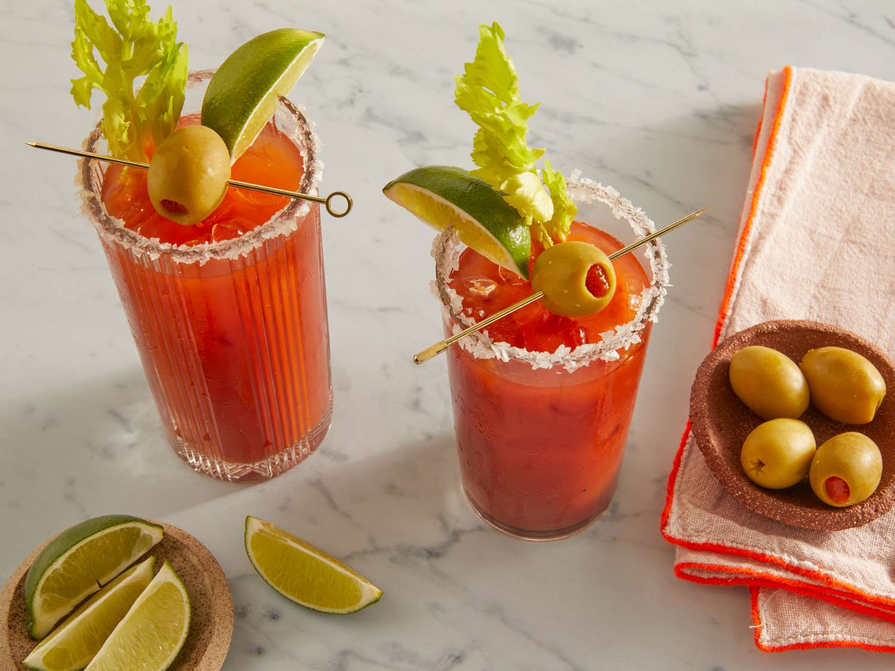

Bloody Mary

A Bloody Mary is tasty tomato-based cocktail that is simple to make
A Bloody Mary is easy to make from scratch with vodka, tomato juice, and a few other simple ingredients. The spicy, salty, and savory taste of this classic cocktail makes it perfect for brunch or other afternoon gatherings.
Ingredients
- Spicy Tomato Juice (3/4 Cup)
- Vodka (1.5 Fl Oz)
- Worcestershire Sauce (2 dashes)
- Tobasco Sauce (1 dash)
- Sea Salt (1 teaspoon)
- Pepper (1 dash)
- Celery (1 stock)
- Green Olives (2 threaded onto a toothpick)
Steps
- Pour salt onto a small plate. Moisten the rim of a glass and press into the salt. Fill the glass with ice cubes.
- Fill a cocktail shaker with ice cubes; add vegetable juice cocktail, vodka, Worcestershire sauce, hot pepper sauce, salt, and pepper. Cover and shake until the outside of shaker has frosted, about 20 seconds.
- Strain Bloody Mary into the prepared glass. Garnish with celery stalk and olives.
- Enjoy!